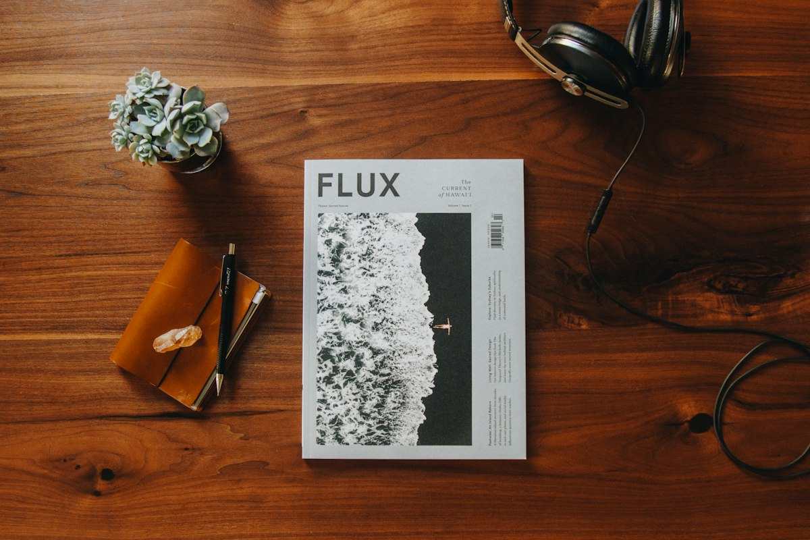

Hidden Companions Move the Flux a Calibration Standard Was Meant to Hold
A pulsing reference star is a small discovery with a long administrative tail, and the interesting part is that the sample caught it at all.

One line, one star
A calibration target list is an ugly, wonderful document. Each line carries one designation and one assumed spectrum, with no field where a second star could declare itself. Readers inherit the singleness as a formatting accident. Phys.org reported on Nov 23, 2026 that pulses in a JWST calibration star exposed a hidden binary, which is the same document failing in the useful direction.
The argument here is narrow. A companion hiding inside a reference star is worse than a companion hiding inside an ordinary star, because everything measured against that reference inherits the error. Standard stars anchor instrument models across many programs. A flux offset that a single target could shrug off becomes a shared bias once the target is a reference for other programs. The pulses are the good news in this story; a sample able to catch them is the better one.
What a pulse actually tells you
A pulse is a clock. Rotation drags a bright region around the visible disk. An orbit slides one star across the other. The whole star expands and contracts in a radial mode. All three routes deliver a period, and a period is a statement about gravity and geometry rather than about brightness. A static flux table cannot produce one by accident.
The report describes the pulses revealing the companion, and that ordering matters. A hidden binary stays hidden when the only question asked of a star is how bright it is. Time-resolved data changes the question. Once a light curve is sampled over many nights, a faint partner can announce itself through eclipse timing or a periodic Doppler shift in the composite spectrum. Neither route requires the companion to be separately imaged.
Why reference samples drift toward this failure
A reference sample is assembled by convenience. A usable standard must be bright enough to observe quickly, and placed where scheduling windows let it be seen without contorting the telescope. It must be quiet in its own variability, so that a model of the instrument has something steady to lean on. Those filters favor old, well-studied stars, and the old well-studied ones near the Sun are disproportionately multiple. A binary survives the selection precisely because it looks like one star.
The observed detail that gives these systems away is usually unglamorous. Residual points from a supposedly flat observation come out with a sawtooth too regular to be pointing jitter, and the first instinct is to blame the detector. Somebody reprocesses. The sawtooth stays. Multiplicity sits in the one place the calibration pipeline was built not to look: at the assumption that the target is single.
The strongest case for shrugging
The sober objection deserves the strongest form. Unresolved companions are old news, and the reference community has learned to live with them. Much of the infrared instrument model rests on targets where a faint secondary adds an irrelevant sliver of flux. If that sliver is small and identical across every program using the standard, some of the error cancels in comparison. Reference stars do not have to be pure. They have to be consistent, and consistency is the lower bar.
The answer is the word pulses. The report describes variability, and cancellation only works on something steady. A companion that transits, or a rotating star whose brightness changes on an orbit, injects signal that no flat-field reprocessing can subtract. The calibration model has no time axis to correct against. A steady offset can be absorbed into the model. A rhythmic one shows up in the data of every program that trusted the target.
What changes for people using the standard
For anyone who observes with these stars, the immediate consequence is a bookkeeping problem. A target found to vary has to be re-observed with the variability sampled, or retired and replaced. Retirement is the expensive option, because a replacement inherits a different spectral energy distribution and the instrument model has to be refit against it. Keeping the star and modeling the companion is cheaper, but it demands epochs nobody scheduled.
Nobody schedules them.
The cheaper fix available to any group is to treat the standard as variable until proven otherwise. That means pulling whatever time series exists for the target, checking whether the calibration epochs were spread or bunched, and flagging any spectrum from a single visit. None of that needs new telescope time. It needs someone to open the archives with the question already in mind, which is the scarce resource here.
What the report does not say
Being honest about the gaps is the useful part. The headline gives the mechanism and the setting, not the numbers: no period, no companion type, no flux ratio, no count of monitored standards. Without those, a reader cannot tell whether this is one awkward star or a hole in a list. That difference decides between a footnote and a reworked table.
Equally unclear is what happens to results already anchored to the target. Programs that used the star earlier are not automatically wrong, but their error budgets were built on an assumption that just lost support. Re-deriving a spectrum is cheap for a simulation group and slow for a team whose paper is published. The likely outcome is quiet, partial correction in the next generation of instrument documentation, with no retraction anywhere.
How to check a standard yourself
The test costs an afternoon. Take any target your program uses as a reference, pull its existing time-series photometry and radial velocity measurements, and look for structure in the residuals. A single epoch cannot falsify much. Years of archived survey data can. Most variable stars were found by that route, by someone who assumed the target was boring and plotted it anyway.
Two cautions belong here. First, a period found in archival data is a candidate, not a confirmed companion; it needs a second season of coverage. Second, variability does not disqualify a standard by itself, since a modeled variable can stay usable if everyone knows the phase convention. A standard fails when its record says nothing about time. The compiler who inherited the line never checked it.
What this is worth before the numbers arrive
One reported variable in a reference sample is not a scandal. Calibration is an administrative practice as much as a physical one, held together by lists nobody re-audits on a schedule. The most useful outcome of the report would be a habit. Any star proposed as a standard should arrive with a time series attached, and the incumbents should be re-checked when a survey releases better data.
This piece could not check the claim. The accessible material is a headline and a date, without the period, the companion parameters or the sample size. Everything above is argument about what a finding of that shape would mean. The measurement belongs to whoever holds the light curve. Until the numbers are published, the honest position is that one calibration star was reported pulsing, and that we do not know how many others were checked.